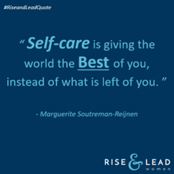
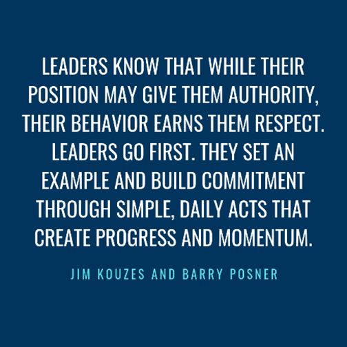
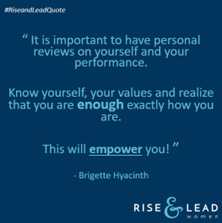

Public Relations Specialist
2019 • Internship • Den Haag, NL
Rise & Lead Women
During my internship at Winkelman & Van Hessen, I worked on multiple PR and communication projects, including Rise & Lead Women, an event focused on empowering women in leadership and business. I developed a social media plan with a focus on LinkedIn and Instagram, designed to increase engagement and visibility before and during the event.
As PR and research assistant, I combined analytical research with strategic communication.
- Creating and writing the social media plan;
- Researching relevant journalists and media outlets;
- Supporting press outreach and event promotion efforts.



×